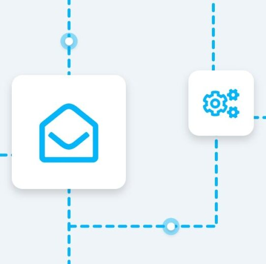
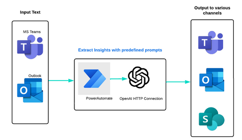
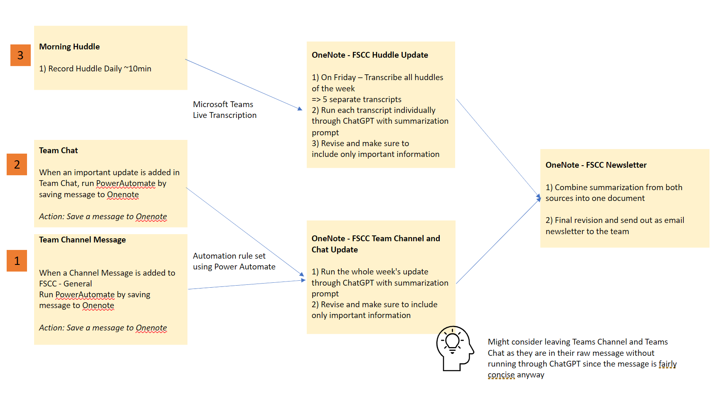
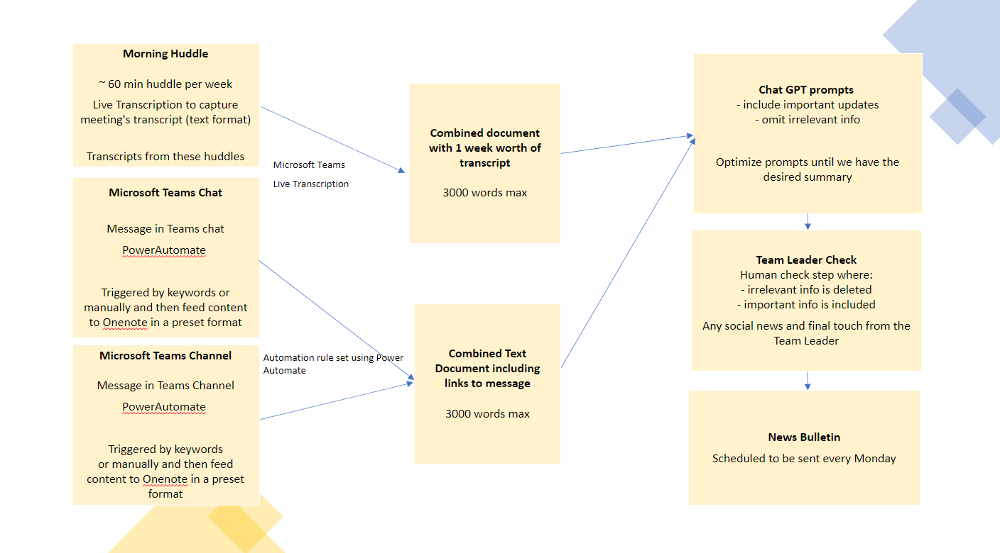

Automation of AI Bulletin - UTAS
The Student Services team at University of Tasmania is a unique team positioned at the crossroads of communication, receiving information and new updates from various departments such as academic advisors, marketing, admissions, and sometimes from students themselves.
When I first started in the role of Future Students Consultant, I noticed a lack of organization and filter of information. It took me hours to sift through messages on Teams if I was away for a few days, some of which were important updates while others were not. I also discovered that I had missed a few morning huddles where lots of meaningful discussions took place.
Furthermore, I realized that key posts were scattered across different Teams channels, making it challenging to stay updated. This issue seemed to be affecting the entire team, and it highlighted the frustration of not being in the information loop. I also became aware that part-time team members who work a few days a week would also face difficulties in understanding what was happening within the team if they are not at work every day.
To address these challenges, I proposed an innovative solution — a weekly automated newsletter that would serve as a knowledge bank for the team. This newsletter would capture all the important information from the week and present it in a digestible format, allowing the team to stay updated more effectively and efficiently. Although it's not a perfect solution, it represents a step forward in enhancing our communication and knowledge-sharing practices.
How a newsletter is called innovative, you may ask?
Well, it's not just about the concept of a newsletter itself, but rather how it is executed that makes it innovative. The main objective of this newsletter is to address several challenges:
First and foremost, the newsletter needs to effectively capture and highlight the important updates exchanged within the team. This involves sifting through hundreds of messages in the Microsoft Teams chat to identify and prioritize the most relevant and significant information. By focusing on the key updates, the newsletter ensures that the team is informed and updated on important developments, while filtering out less crucial or irrelevant messages.
Additionally, the newsletter should incorporate the discussions that occur during our morning huddles, even though they take place in an audio format. By including key points and highlights from these discussions, the newsletter ensures that everyone on the team is kept informed and aware of important topics that were covered during the huddles. This allows for better collaboration and alignment among team members, even if they were not present during the actual huddle.
Additionally, the newsletter should also gather scattered messages from different Teams Channels, making it a centralised source of information.
Lastly, it is crucial to minimize the administrative tasks involved in creating the newsletter and save time for myself and other leaders to focus on providing support to the team during the busy peak period of semester intake. This presents the challenge of creating an informative newsletter that efficiently captures information from various data sources within a time frame of 30 minutes or less. By streamlining the process and utilizing automation tools, we can ensure that the newsletter is created and delivered in a timely manner, allowing us to allocate more time and attention to supporting the team and addressing their needs effectively.
To facilitate this process, I utilize Power Automate to create an automation rule that filters and captures important updates from the team's Microsoft Teams chat. By setting specific keywords such as "update" or "key update", relevant messages are automatically extracted and transferred to a designated OneNote document. This rule is triggered in real-time, ensuring that important information is captured promptly. Moreover, I have the flexibility to manually run the automation and save messages in a preset format in OneNote, allowing for seamless organization and easy access to the captured updates.
Furthermore, with our morning huddles where content is in audio format, I utilize the automatic live transcription service provided by Microsoft Teams. Once the transcription is extracted, I can run it through ChatGPT, optimizing the prompt to obtain the desired results. This enables me to effectively transcribe and summarize the discussions, capturing the key information and insights shared during the huddles.
The initial draft of my thought process is as follows:
After exploring Power Automate and customizing automation rules using HTML language for about an hour, I successfully set up triggers and formatting rules to capture important information in an organized manner within my OneNote document.
During our morning huddle, I leveraged the automatic live transcription service in Microsoft Teams to obtain a transcript of the entire meeting. However, the initial summarization generated by ChatGPT was not able to capture all the key messages effectively. It also included irrelevant details such as weekend plans and Friday jokes. To improve the summarization, I optimized the ChatGPT prompt by providing hints of keywords to ensure important messages were captured while filtering out unnecessary information. Though not as complicated and groundbreaking, it was exciting much like the scene in “The Imitation Game” movie [spoiler alert] where Alan Turing deciphered the German enigma code by feeding the phrases “Heil Hitler” to recalibrate his machine to decode German encrypted messages.
I then created a new email distribution list in Outlook and scheduled the newsletter to be sent out every Monday. As part of my routine, I dedicate time on Fridays to review and make final edits to the content in my OneNote document before including it in the distribution for the following week. This process ensures that the newsletter is well-prepared and delivers valuable information to the recipients.
The final workflow will look something like the following:
The result is an informative newsletter that captures all the relevant and up-to-date information from our team and division. With the majority of the creation process automated, it takes me less than 15 minutes each week to create and deliver the newsletter. This efficient and streamlined approach ensures that frontline staff members are kept informed, and they can always refer back to these weekly newsletters for reference or further information.
Future Students Service is at a pivotal crossroads of communication, and innovative tools like the automated weekly newsletter, powered by PowerAutomate to capture key updates and Generative AI to craft informative newsletters for the team, represent a valuable and time-effective solution for both team members and the leadership team.
Furthermore, as a result of the weekly newsletter, I’ve launched a weekly spotlight training session in response to the team’s request. During these sessions, we engage in brief training and dive into the content highlighted in the newsletter. What initially began as an effort to capture and disseminate key updates from MS Teams and meetings has evolved into a regular training program for the team. This ensures that our group of Future Student Consultants remains current with the latest changes and any new information circulating within the university. As a result, we can consistently provide accurate and up-to-date advice to future students.